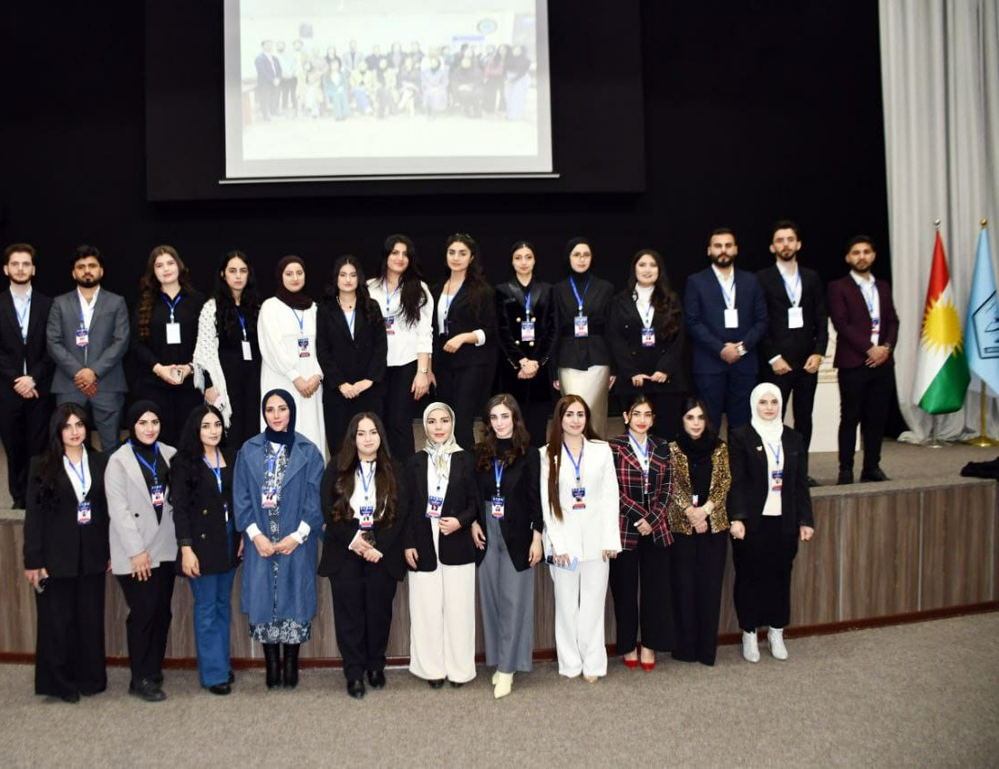
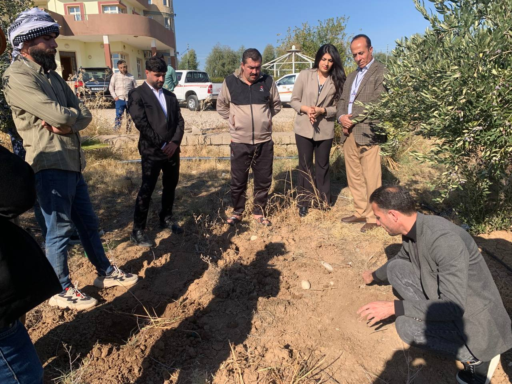
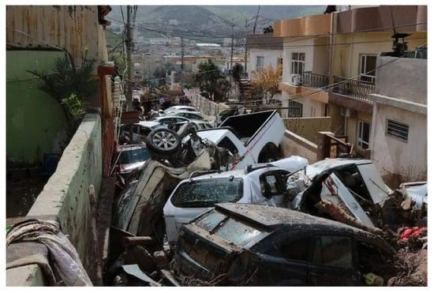
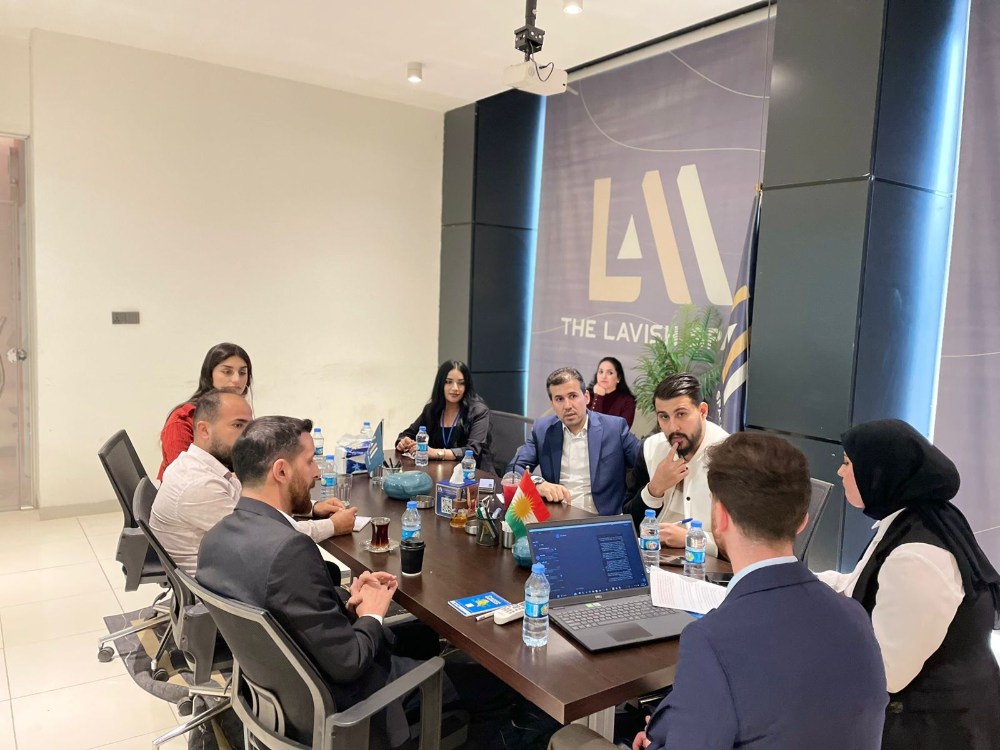

University of Duhok | In Partnership with UNICEF
The PAR project is a youth-driven research initiative launched by the University of Duhok to
address water scarcity and pollution in Duhok Governorate. Led by Dr. Mohammed Aziz Ibrahem, Dean
of the College of Science, and in collaboration with UNICEF, the project empowers students to
design and implement sustainable solutions through scientific research, fieldwork, and community
engagement.
Key outcomes include eight youth-led initiatives, increased public awareness, and actionable
policy recommendations to improve water management.
This research explores household water storage practices and their impact on water quality and health in Duhok City, Iraq. Conducted with UNICEF, it uses surveys, interviews, and lab tests to recommend policy and public solutions for safer water management.
Lifemakers Group project by University of Duhok students empowers farmers in Duhok through hydroponic farming, promoting sustainable agriculture with support from UNICEF.